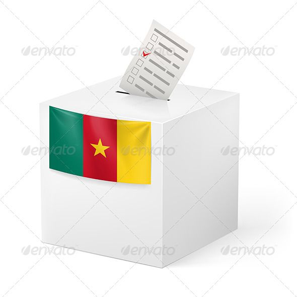

Les Candidats

Maurice Kamto
Mouvement pour la Renaissance du Cameroun
Projet électoral :
- Réforme du système éducatif
- Transition écologique accélérée
- Relance économique par l'innovation

Paul Biya
Rassemblement démocratique du Peuple Camerounais
Projet électoral :
- Sécurité renforcée
- Baisse des impôts
- Modernisation des infrastructures

Joshua Osih
Social Democratique Front
Projet électoral :
- Plan climat ambitieux
- Économie circulaire et locale

Cabral Libii
Parti Camerounais pour la Reconciliation Nationale
Projet électoral :
- Justice sociale
- Égalité des chances
W. NDE NTUMAZAH
Union des Populations du Cameroun
Projet électoral :
- Développement rural
- Numérique pour tous
ATEBA NGOA André
Parti Républicain du Peuple Camerounais
Projet électoral :
- Droits des femmes
- Éducation inclusive

HAMENI MBIELEU Victorin
Union des Forces Démocratiques du Cameroun
Projet électoral :
- Innovation technologique
- Startups françaises

ESSAKA Annette
Démocratie Intégrale du Cameroun
Projet électoral :
- Énergies renouvelables
- Mobilité douce